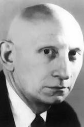

|  |
1966 год Alan J. Perlis (1922–1990) «За влияние в области передовых техник программирования и построения компиляторов» |
Страна: США
Образование: Доктор философии в области математики, Массачусетский технологический институт (MIT), 1950
О лауреате
Имеется в виду его работа в группе, разработавшей язык программирования Algol. Perlis сыграл важную роль в превращении этого языка в модель для исследования программирования. В публичных спорах он отстаивал главенствующую роль языков программирования и алгоритмов, как определяющую концепцию компьютерных технологий.
Ключевые слова: IT, ALGOL
Краткая библиография
| 1. |
De Millo, Richard A., Richard J. Lipton and Alan J. Perlis, “Social processes and proofs of theorems and programs”, Communications of the ACM, Vol. 22, Num. 5, May 1979, pp. 271-280. Это противоречивая атака на концепцию проектирования безупречных компьютерных программ, основанная на высоко абстрактных математических методах. |
| 2. |
Newell, Allen, Alan J. Perlis and Herbert A. Simon, “Computer Science”, Science, Vol. 157, Num. 3795, September 22 1967, pp. 1374-1375. Авторы представляют страстную защиту информатики, как самостоятельной академической области, чьим назначением является изучения всех явлений, касающихся компьютеров, включая программы, алгоритмы и аппаратное обеспечение. |
| 3. |
Backus, J. W., F. L. Bauer, J. Green, C. Katz, J. McCarthy, A. J. Perlis, H. Rutishauser, K. Samelson, B. Vauquois, J. H. Wegstein, A. van Wijngaarden and M. Woodger, “Report on the algorithmic language ALGOL 60”, Communications of the ACM, Vol. 3, Num. 5, May 1960, pp. 299-314. Этот доклад содержить второе определение языка программирования ALGOL, которое, кроме других значительных достижений, представило использование нотации, первоначально разработанной John Backus в 1959 году, для описания языков программирования. |
| 4. |
Perlis, A. J., K. Samelson, “Preliminary report: international algebraic language”, Communications of the ACM, Vol.1, Num. 12, December 1958, pp. 8-22. В отчёте содержится первое определение International Algebraic Language (IAL), который вскоре был переименован в ALGOL, и был разработан для того, чтобы стать универсальным языком для описания научных вычислительных процессов и их перевода в компьютерные программы, которые должны выполняться на любом компьютере. |
| 5. |
Chipps, J., M. Koschmann, S. Orgel, A. Perlis and J. Smith, “A mathematical language compiler,” Proceedings of the 1956 11th ACM national meeting, New York, ACM, 1956, pp. 114-117. Это самое раннее описание системы IT-программирования, которая позволила использовать математическую нотацию и была задумана для реализации на разных типах компьютеров без значительных изменений. |